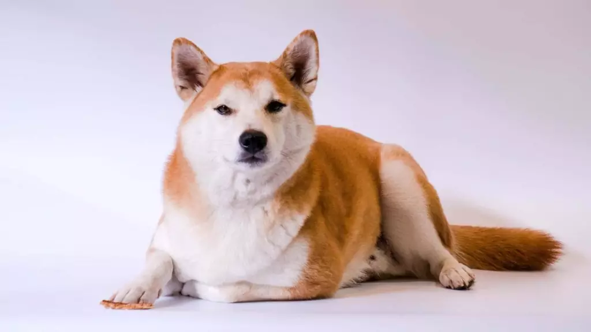

Akita ou Akita Inu

O porte de cachorro poderoso e a carinha fofa vão te conquistar à primeira vista, mas será no dia a dia que o akita ou akita inu vai ganhar de vez o seu coração. Por mais que esse cachorro precise de uma dose extra de paciência para o adestramento, é um ótimo companheiro – protetor, leal e muito brincalhão. Certamente será um grande amigo para o seu tutor e sua família!
Lembra do filme “Sempre ao Seu Lado”? Sim, o cachorro Hachiko, que continuou à espera de seu tutor mesmo depois que ele morreu, era um akita. Não é à toa que a história real de um akita ganhou os holofotes, monumentos e filmes graças à devoção ao tutor. Essa raça desenvolve um grande amor por seus humanos e pede em troca apenas carinho, atividades físicas e muita brincadeira, ou seja, a sua companhia!
Origem: Japão
Peso: 32-59 kg
Altura: 61-71 cm
Expectativa de vida: 10-13 anos
História:
Surgimento do Akita Inu
Os registros apontam que o akita surgiu nos anos 1600, durante a Era Tokugawa (1603-1867), na região norte do Japão. Inicialmente a raça era conhecida como “cães das montanhas repletas de neve”. À época, esses cachorros eram usados para caçar e proteger os senhores feudais. Também tiveram uma passagem em rinhas de brigas, quando alguns criadores tentaram cruzá-los com outras raças para melhorar suas habilidades, mas felizmente esses eventos foram proibidos.
Em tempos mais recentes, no início da Era Showa (1925-1989), uma emocionante história de amizade chamou a atenção do Japão. Hachiko aguardava seu tutor todos os dias em frente à estação de Shibuya, em Tóquio, e permaneceu esperando por anos, sem entender que ele havia falecido. O fato comoveu a população e a partir daí houve um esforço para preservar a raça, como a fundação da Sociedade de Preservação do Akita Inu. Em 1937, a raça de cachorro akita tornou-se tesouro nacional do Japão.
A raça foi reconhecida oficialmente pelo American Kennel Club (AKC) em 1972, depois de quase ter sido extinta durante a Segunda Guerra Mundial. Hoje em dia, norte-americanos e canadenses consideram a existência de dois tipos da raça: o akita japonês e o akita americano, também conhecido como grande cão japonês – raça desenvolvida a partir dos cachorros trazidos pelos militares. Entretanto, para o resto do mundo, são raças distintas.
Características:
Cores do akita inuO akita apresenta cores vivas e brilhantes como vermelho-fulvo (um castanho avermelhado), sésamo (vermelho-fulvo com as pontas pretas), tigrado (uma cor sólida e listras em tons prateados ou pretos) e branco. As marcas devem ser equilibradas e apresentar o chamado “urajiro”, que é um pelo esbranquiçado nas bochechas, mandíbula, pescoço, peito, tronco, cauda, face e laterais do focinho (exceto se o cachorro for branco).
Na linhagem americana, a raça pode apresentar uma gama maior de cores. De acordo com o American Kennel Club (AKC), qualquer cor que inclua branco, tigrado ou urajiro. Ou seja, a lista é grande e abrange preto, marrom, prata, amarelo alaranjado e outros.
Temperamento do akitaO akita
é conhecido por ser um excelente cão de companhia que precisa fazer parte do convívio familiar. É por isso que, embora necessite de espaço para se exercitar, não deve ser tratado como um cachorro de quintal, que fica somente fora de casa. Afinal, ele adora a companhia dos seus humanos e é muito leal, amoroso e protetor com eles.
Além disso, é um cachorro muito brincalhão. Aliás, por adorar brincar, seu jeito pode até parecer bobo, mas não se engane! É uma raça inteligente e cheia de personalidade, que, às vezes, quer ocupar o lugar de seu tutor e ser o líder.
Será necessária uma dose de paciência e treinamento para que o cachorro dessa raça aprenda e obedeça: por isso, o akita não é muito recomendado para quem nunca teve experiências com cachorros. A dica aqui é usar sempre técnicas positivas, com comandos que dependam mais de motivação do que de força. Invista em palavras de incentivo, como “bom garoto” ou “muito bem”, ou até mesmo pequenos agrados, como petiscos.
Akita inu com crianças, estranhos e outros animais
O akita adora conviver com a família, mas é recomendado que seja supervisionado quando estiver com as crianças. É preciso também ensinar os pequenos a não provocarem esse cachorro, pois isso pode aflorar o instinto de ataque presente em cães de caça.
É justamente por terem um caçador dentro deles – mesmo que não aprendam a caçar – que animais pequenos como gatos, galinhas e patos se tornam a presa no jogo deles. Com outros cachorros, a amizade também costuma ser difícil, pois o akita gosta mesmo é de gente, ou na verdade a “sua” gente, como o tutor e sua família.
Estranhos são considerados inimigos para esse cachorro protetor. Por isso, é preciso apresentar o cachorro aos seus amigos e parentes, para evitar que o akita ataque seus convidados. A socialização frequente vai ajudá-lo a distinguir alguém confiável de uma real ameaça.
O akita late muito?
Não. O akita late somente quando necessário. Mas é um cachorro curiosamente vocal com os seus tutores e age como se estivesse conversando.
O akita inu é destruidor?
O akita é cão de companhia muito apegado à sua família. Logo, deixá-lo sozinho em casa por um longo período pode mudar o seu comportamento. Em outras palavras, é possível que, quando você chegar após um longo período de ausência, o jardim esteja destruído e os móveis “mastigados”. Investir em treinamento pode ajudar a amenizar esse tipo de comportamento.
O akita é agitado?
Sim. Os cachorros da raça akita não costumam ser hiperativos,mas são cheios de energia e adoram atividades físicas. Também por isso é preciso que estejam em um ambiente seguro e cercado, pois, por seu instinto caçador, são capazes cavar e escalar.
Cuidados
O akita é um cachorro sem odor e bem limpo: ele mesmo se encarrega da própria higiene. Mas, em contrapartida, precisa de muita escovação e exercícios físicos. Buscar um adestramento de obediência ajuda a torná-lo ainda mais adorável e facilita a convivência.
– Alimentação: como os akitas são grandes e cheios de energia, os cachorros dessa raça comem bastante e tendem a sentir fome rapidamente. Mas recomenda-se que o cachorro coma apenas duas vezes ao dia – a quantidade varia de acordo com o tamanho. O veterinário pode recomendar a quantidade ideal e os horários da refeição, bem como orientar quanto ao uso de alimentos frescos, como vegetais e proteínas, em sua dieta.
– Banho e escovação: essa raça de cachorro é bem limpa e banhos devem ser dados somente quando necessário. Por outro lado, eles necessitam de escovação e muita paciência com os pelos pela casa. Escovar o seu pet com uma escova macia, de preferência diariamente, vai ajudar tanto a mantê-lo bonito e saudável, quanto a minimizar o “rastro peludo” deixado em todos os cantos.
– Unhas, dentes e orelhas: corte as unhas de seu akita e escove os dentes regularmente. Não se esqueça de limpar suas orelhas semanalmente e verificar se está tudo bem. Isso ajuda a prevenir infecções.
– Olhos: como estão propensos a desenvolver problemas oculares, dê uma atenção especial aos olhos e observe qualquer mudança em seu aspecto, como brancura, vermelhidão ou irritação.
Saúde
Os akitas são cachorros muito saudáveis. Mas é claro que, como qualquer outra raça, também podem enfrentar algumas dificuldades com a saúde. Vale destacar ainda que quando se adquire um filhote de criadores responsáveis, todos os problemas abaixo podem ser prevenidos ou facilmente identificados com exames.
– Quadril: displasia do quadril é uma doença muito comum em cães de médio e grande porte, apesar de poder aparecer nos pequenos também. É uma má formação das articulações do quadril que causa dor e pode levar à artrite.
– Olhos: akitas estão propensos a desenvolver problemas oculares como a atrofia regressiva da retina, uma doença que causa a degeneração da retina de forma gradual, levando à catarata e cegueira.
– Estômago: os cachorros dessa raça costumam ser mais suscetíveis a desenvolver a síndrome da dilatação volvo gástrica (conhecida como GDV, sigla em inglês), que provoca uma espécie de torção no estômago. A doença é séria, grave e pode ser fatal caso não tenha tratamento adequado.
Nível de exercícios do akita inuSe você for aventureiro, o akita será o companheiro perfeito para as suas trilhas e corridas. O cachorro dessa raça é enérgico, adora ar fresco e se desenvolve bem quando faz exercícios físicos e tem companhia humana. Por isso, prepare-se para encarar aproximadamente 13km semanais de caminhadas, quase 2km ou 60 minutos por dia, para que o akita seja feliz e mantenha o seu vigor físico e mental.
Quanto custa um akita?
O preço de um filhote de akita pode variar de R$ 900,00 a R$ 6.500,00 — o valor foi calculado com base no preço de filhotes da raça nos principais sites de venda do país.
Antes de decidir comprar um cachorro, lembre-se que existem muitos animais abandonados nas ruas ou resgatados por ONGs à procura de uma família amorosa. Adotar é tudo de bom! ?
Preço